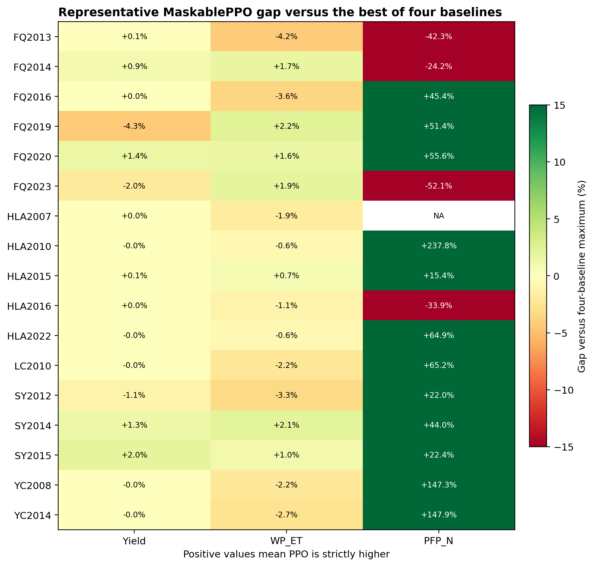

HLA/SY采用东北及长城沿线春玉米表1，YC/FQ/LC采用华北黄淮和汾渭平原夏玉米表3。取推荐区间中值并固定映射到DAP；专家方案是模型化基线，不是真实逐年记录。
| 区域模板 | 推文表 | 阶段 | DAP | N下限(kg/亩) | N上限(kg/亩) | N中值(kg/ha) | 水下限(方/亩) | 水上限(方/亩) | 水中值(mm) |
|---|---|---|---|---|---|---|---|---|---|
| 华北黄淮/汾渭夏玉米 | 表3 华北黄淮和汾渭平原夏玉米区 | 出苗水 | 7 | 5.0 | 6.0 | 82.50 | 10.0 | 20.0 | 22.50 |
| 华北黄淮/汾渭夏玉米 | 表3 华北黄淮和汾渭平原夏玉米区 | 小喇叭口期 | 30 | 2.5 | 3.0 | 41.25 | 20.0 | 30.0 | 37.50 |
| 华北黄淮/汾渭夏玉米 | 表3 华北黄淮和汾渭平原夏玉米区 | 大喇叭口期 | 45 | 3.5 | 4.0 | 56.25 | 30.0 | 35.0 | 48.75 |
| 华北黄淮/汾渭夏玉米 | 表3 华北黄淮和汾渭平原夏玉米区 | 抽雄散粉期 | 60 | 2.0 | 2.5 | 33.75 | 30.0 | 35.0 | 48.75 |
| 华北黄淮/汾渭夏玉米 | 表3 华北黄淮和汾渭平原夏玉米区 | 灌浆期 | 80 | 2.0 | 2.5 | 33.75 | 25.0 | 30.0 | 41.25 |
| 华北黄淮/汾渭夏玉米 | 表3 华北黄淮和汾渭平原夏玉米区 | 乳熟期 | 100 | 0.0 | 0.0 | 0.00 | 15.0 | 25.0 | 30.00 |
| 东北/长城沿线春玉米 | 表1 东北及长城沿线春玉米区 | 播种期/基肥 | 0 | 7.0 | 8.0 | 112.50 | 20.0 | 30.0 | 37.50 |
| 东北/长城沿线春玉米 | 表1 东北及长城沿线春玉米区 | 小喇叭口期 | 30 | 2.0 | 2.5 | 33.75 | 25.0 | 35.0 | 45.00 |
| 东北/长城沿线春玉米 | 表1 东北及长城沿线春玉米区 | 大喇叭口期 | 50 | 4.0 | 5.0 | 67.50 | 35.0 | 40.0 | 56.25 |
| 东北/长城沿线春玉米 | 表1 东北及长城沿线春玉米区 | 抽雄散粉期 | 65 | 1.5 | 2.0 | 26.25 | 35.0 | 40.0 | 56.25 |
| 东北/长城沿线春玉米 | 表1 东北及长城沿线春玉米区 | 灌浆初期 | 85 | 2.0 | 2.5 | 33.75 | 25.0 | 30.0 | 41.25 |
| 东北/长城沿线春玉米 | 表1 东北及长城沿线春玉米区 | 乳熟末期 | 110 | 1.5 | 2.0 | 26.25 | 15.0 | 25.0 | 30.00 |
差值为PPO减去四基线最大值；正数代表严格领先，负数代表尚有差距。

| 站点年 | PPO措施 | I/N | 产量差 | WP_ET差 | PFP_N差 | 胜出指标 | seed证据 | 判断 |
|---|---|---|---|---|---|---|---|---|
| FQ2013 | DAP7: I30.0/N50.0; DAP30: I0.0/N100.0; DAP45: I0.0/N100.0; DAP60: I15.0/N0.0; DAP80: I15.0/N0.0 | 60/250 | 7.2 (0.1%) | -0.09 (-4.2%) | -22.9 (-42.3%) | yield | 1/3 | 代表策略结构合理；仅候选seed成功，跨seed稳定性不足 |
| FQ2014 | DAP7: I15.0/N50.0; DAP30: I0.0/N50.0; DAP45: I15.0/N0.0; DAP60: I15.0/N0.0; DAP80: I30.0/N100.0 | 75/200 | 74.2 (0.9%) | 0.04 (1.7%) | -13.9 (-24.2%) | yield;WP_ET | 2/3 | 代表策略结构合理；至少2/3 seed有指标优势 |
| FQ2016 | DAP7: I30.0/N100.0; DAP45: I30.0/N0.0; DAP80: I15.0/N0.0 | 75/100 | 0.4 (0.0%) | -0.09 (-3.6%) | 25.0 (45.4%) | PFP_N | 2/3 | 代表策略结构合理；至少2/3 seed有指标优势 |
| FQ2019 | DAP7: I0.0/N50.0; DAP45: I15.0/N0.0; DAP60: I15.0/N50.0; DAP80: I15.0/N0.0 | 45/100 | -375.0 (-4.3%) | 0.06 (2.2%) | 28.7 (51.4%) | WP_ET;PFP_N | 3/3 | 代表策略结构合理；至少2/3 seed有指标优势 |
| FQ2020 | DAP7: I15.0/N100.0; DAP30: I30.0/N0.0; DAP45: I30.0/N0.0; DAP60: I30.0/N0.0; DAP80: I15.0/N0.0 | 120/100 | 135.9 (1.4%) | 0.04 (1.6%) | 34.6 (55.6%) | yield;WP_ET;PFP_N | 1/3 | 代表策略结构合理；仅候选seed成功，跨seed稳定性不足 |
| FQ2023 | DAP7: I0.0/N100.0; DAP30: I0.0/N100.0; DAP45: I15.0/N0.0; DAP60: I15.0/N0.0; DAP80: I30.0/N100.0 | 60/300 | -184.4 (-2.0%) | 0.05 (1.9%) | -32.9 (-52.1%) | WP_ET | 1/3 | 代表策略结构合理；仅候选seed成功，跨seed稳定性不足 |
| HLA2007 | DAP1: I15.0/N0.0; DAP30: I15.0/N0.0; DAP85: I30.0/N0.0; DAP110: I30.0/N0.0 | 90/0 | 0.7 (0.0%) | -0.03 (-1.9%) | NA | yield | 2/3 | 代表策略结构合理；至少2/3 seed有指标优势 |
| HLA2010 | DAP1: I0.0/N50.0; DAP65: I30.0/N0.0; DAP85: I30.0/N0.0; DAP110: I30.0/N0.0 | 90/50 | -0.3 (-0.0%) | -0.01 (-0.6%) | 110.6 (237.8%) | PFP_N | 2/3 | 代表策略结构合理；至少2/3 seed有指标优势 |
| HLA2015 | DAP1: I0.0/N50.0; DAP50: I0.0/N50.0; DAP65: I30.0/N50.0; DAP85: I15.0/N0.0; DAP110: I15.0/N0.0 | 60/150 | 5.2 (0.1%) | 0.01 (0.7%) | 6.8 (15.4%) | yield;WP_ET;PFP_N | 2/3 | 代表策略结构合理；至少2/3 seed有指标优势 |
| HLA2016 | DAP1: I0.0/N50.0; DAP30: I30.0/N50.0; DAP50: I0.0/N50.0; DAP85: I0.0/N100.0 | 30/250 | 0.5 (0.0%) | -0.02 (-1.1%) | -15.5 (-33.9%) | yield | 2/3 | 代表策略结构合理；至少2/3 seed有指标优势 |
| HLA2022 | DAP1: I0.0/N50.0; DAP50: I30.0/N50.0; DAP65: I15.0/N0.0; DAP85: I15.0/N0.0; DAP110: I30.0/N0.0 | 90/100 | -0.6 (-0.0%) | -0.01 (-0.6%) | 31.2 (64.9%) | PFP_N | 1/3 | 代表策略结构合理；仅候选seed成功，跨seed稳定性不足 |
| LC2010 | DAP7: I30.0/N100.0; DAP30: I30.0/N50.0 | 60/150 | -0.0 (-0.0%) | -0.07 (-2.2%) | 23.0 (65.2%) | PFP_N | 1/1 | 代表策略结构合理；仅1 seed，稳定性未评估 |
| SY2012 | DAP1: I15.0/N50.0; DAP30: I15.0/N50.0; DAP65: I30.0/N50.0; DAP85: I30.0/N50.0; DAP110: I15.0/N0.0 | 105/200 | -110.0 (-1.1%) | -0.08 (-3.3%) | 9.1 (22.0%) | PFP_N | 1/3 | 代表策略结构合理；仅候选seed成功，跨seed稳定性不足 |
| SY2014 | DAP50: I15.0/N100.0; DAP65: I15.0/N100.0; DAP85: I15.0/N0.0; DAP110: I15.0/N0.0 | 60/200 | 145.9 (1.3%) | 0.05 (2.1%) | 17.1 (44.0%) | yield;WP_ET;PFP_N | 3/3 | 代表策略结构合理；至少2/3 seed有指标优势 |
| SY2015 | DAP1: I30.0/N0.0; DAP30: I0.0/N50.0; DAP50: I30.0/N0.0; DAP65: I15.0/N100.0; DAP85: I30.0/N100.0; DAP110: I15.0/N0.0 | 120/250 | 216.7 (2.0%) | 0.02 (1.0%) | 8.1 (22.4%) | yield;WP_ET;PFP_N | 2/3 | 代表策略结构合理；至少2/3 seed有指标优势 |
| YC2008 | DAP7: I30.0/N100.0; DAP30: I30.0/N0.0; DAP45: I15.0/N0.0; DAP60: I15.0/N0.0 | 90/100 | -1.9 (-0.0%) | -0.05 (-2.2%) | 48.6 (147.3%) | PFP_N | 1/3 | 代表策略结构合理；仅候选seed成功，跨seed稳定性不足 |
| YC2014 | DAP7: I30.0/N100.0; DAP30: I30.0/N0.0; DAP45: I30.0/N0.0; DAP60: I30.0/N0.0 | 120/100 | -0.1 (-0.0%) | -0.07 (-2.7%) | 56.2 (147.9%) | PFP_N | 2/3 | 代表策略结构合理；至少2/3 seed有指标优势 |
综合分级：HLA2015、SY2014、SY2015较均衡；FQ2020三项均领先但仅1/3 seed成功。若只在PFP_N或WP_ET上领先、另一指标明显退步，应作为权衡案例而非全面成功案例。
历史DQN仅SY2014有严格胜出指标；由于旧探索率日程问题，表中结果只作provisional对照。
| 站点年 | 产量差 | WP_ET差 | PFP_N差 | 胜出指标 | 证据状态 |
|---|---|---|---|---|---|
| FQ2016 | -17.0 | -0.03 | NA | none | provisional：旧探索率日程影响 |
| HLA2010 | 0.0 | -0.01 | NA | none | provisional：旧探索率日程影响 |
| LC2010 | 0.0 | -0.07 | NA | none | provisional：旧探索率日程影响 |
| SY2014 | 139.0 | 0.04 | -1.4 | yield;WP_ET | provisional：旧探索率日程影响 |
| YC2014 | 0.0 | -0.11 | -0.3 | none | provisional：旧探索率日程影响 |
17/17代表策略满足I≤120、N≤300，动作位于预定义阶段，且DAP>90无施氮；相对expert有17/17节水、15/17节氮。合理性是模型约束和结果层面的判断，不等同于田间因果最优。
导师汇报时同时展示“17/17存在候选”和“10/16初步稳定”，不要只报代表seed。后续若继续，优先处理跨seed不稳定年份或做预注册的奖励稳健性分析。